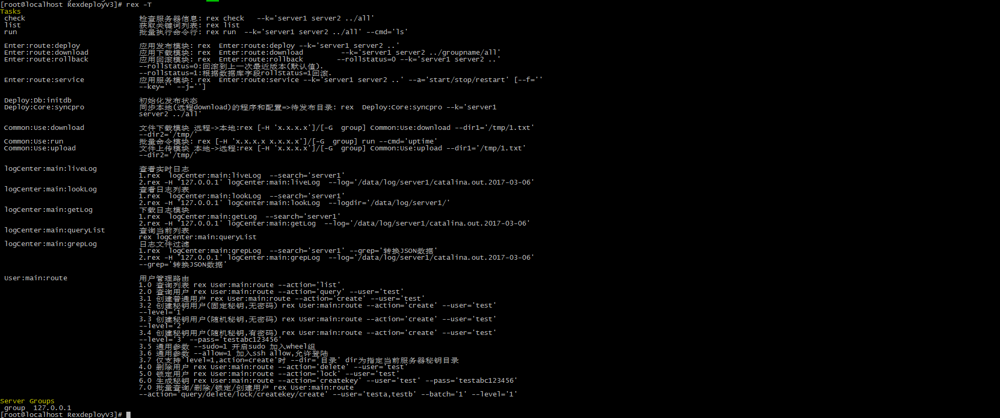

windows平台安装
rexdeploy原则上只要支持perl语言，就能直接使用。但我在Windows7上测试，在安装IO::Pty模块，安装失败。从官方的解析说该模块不支持Windows平台，所以在windows本机平台安装失败。Windows平台提供三种安装体验方式:
docker方式安装，Virtualbox+Vagrant，Virtualbox。Virtualbox+Vagrant和Virtualbox差不多是一种安装方式，只是使用Virtualbox+Vagrant的安装方式便于在windows下进行二次开发。
相关软件下载:
vagrant_2.0.2: https://download.osichina.net/tools/vagrant_2.0.2_x86_64.msi
Git-2.16.1.2: https://download.osichina.net/tools/Git-2.16.1.2-64-bit.exe
VirtualBox-5.2.6-120293: https://download.osichina.net/tools/VirtualBox-5.2.6-120293-Win.exe
Docker方式安装
docker环境的安装，这里就不过过多介绍，不知道安装docker环境请撮: https://get.daocloud.io/
Docker快速体验
Docker build运行
git clone https://gitee.com/lookingdreamer/RexDeployV3.git
cd RexDeployV3/docker
docker build --rm -t rexdeploy:3.0 .
docker run -it -d rexdeploy:3.0
docker ps #查询容器id
docker exec -it [containerID] bash #使用容器ID登陆
进入到容器之后执行 rex -T, 看到以下提示，则证明安装已经成功。
注意: 如果你安装的docker版本是Docker Toolbox ,那么请按照如下的方法进入容器操作。主要的原因是因为windows版本对某些特殊字符不支持，遇到特殊字符，容器就会自动退出，建议进入到宿主机进行操作。
- Docker Toolbox操作如下:
git clone https://gitee.com/lookingdreamer/RexDeployV3.git cd RexDeployV3/docker docker build --rm -t rexdeploy:3.0 . docker run -it -d rexdeploy:3.0 docker ps #查询容器id docker-machine ls #查询容器宿主机的name docker-machine ssh [machine-name] #默认为default,如果你的docker-machine的name为default,可以不加该参数 docker exec -it [containerID] bash #使用容器ID登陆
Docker镜像导入运行
如果你的网速还可以，不想重新build，你也可以直接下载备份镜像运行，由于镜像打包了jdk/tomcat4个模拟客户端的安装环境，镜像包比较大，目前镜像包大小为1.7G
wget --no-check-certificate https://download.osichina.net/docker/rexdeploy3.0.tar
docker load -i rexdeploy3.0.tar
docker run -it -d rexdeploy:3.0
docker ps #查询容器id
docker exec -it [containerID] bash #使用容器ID登陆
Docker 从阿里云拉取镜像运行
Vagrant + VirtualBox方式安装
这种方式安装需要你安装Vagrant和VirtualBox，如果你已经安装可以忽略，如果未安装可以按照上面给的地址自行下载。
git clone https://gitee.com/lookingdreamer/RexDeployV3.git
cd RexDeployV3
cd vagrant
rm ./.vagrant/ -fr #删除原用户的vagrant数据，windows下直接删除该目录重新创建一个新的空目录也是可以的。
mv ./Vagrantfile ./Vagrantfile.bak
wget --no-check-certificate https://download.osichina.net/tools/rexdeployv3.box
vagrant box add rexdelopy rexdeployv3.box #添加镜像
vagrant init rexdelopy #初始化
\cp ./Vagrantfile.bak ./Vagrantfile
vagrant up #启动
vagrant ssh #进入终端
通过vagrant进入到虚拟机之后，执行 cd /data/RexdeployV3 && rex -T, 如果也看到以上一样的截图，则证明安装成功。
VirtualBox方式安装
这种方式基本上没有必要介绍了，将下载下来的VirtualBox的虚拟镜像文件导入即可。镜像下载地址: https://download.osichina.net/tools 。导入完成之后启动虚拟机，进入到/data/RexdeployV3 目录，执行rex -T，如果也看到以上一样的截图，则证明安装成功。